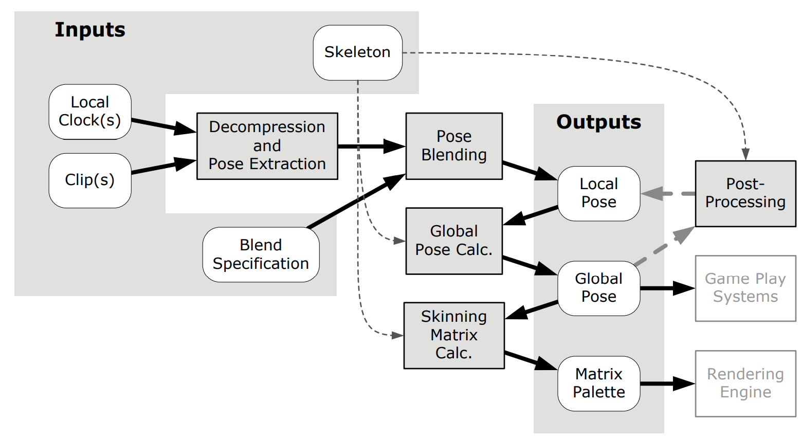

动画系统笔记
这是笔者大三在游戏公司实习时做的的动画系统笔记，基于 Game Engine Architecture, Third Edition 这本书的相关章节，挖出来给大家分享。
Per-Vertex Animation 和 Morph Target Animation
逐顶点动画把每个顶点的在动画的每一帧该如何移动，编码至顶点位置的表示中。
morph target animation 是 per-vertex animation 的变种，由艺术家预先制作几个极端动画下顶点的位置，然后在实际表现中让顶点在这几个极端位置上插值。这项技术广泛用于面部表情动画。Morph Targets, Morpher, Blendshapes, 变形器, 混合变形, Shape Keys, 形态键，都是指这个动画技术。
蒙皮动画和 SkinnedVertex
蒙皮动画就是（非简单粗暴的刚性）骨架动画，是现代电影、游戏使用最广泛的动画技术。
在蒙皮动画中，我们不关心 bone（当我们提到 bone 时，它就是 joint 的别称）。skeleton 是 joint 的集合，skin 是连接若干 joint 的 triangle mesh。skin 的各顶点可以与各 joint 形成权重表，从而控制当 joint 发生位移时，skin 的表现。
对于每个顶点，我们不希望它绑定太多关节，这样既不合理也浪费计算资源。典型的限制为一个顶点至多绑定到 4 个关节。
对于任一顶点 \(v\)，对其绑定的关节集合 \(J_v\) 中的任一关节 \(j\)，我们需要为其赋予权重 \(w_{v,j}\)，并保证 \(\sum_{j \in J_v} w_{v,j} = 1\)。顶点绑定后，它的移动行为相当于其绑定的各关节的移动行为的加权平均。特别地，对于一个仅绑定到一个关节的顶点，它的移动行为必然保持它在这个关节空间（joint space, 或 local space）的坐标的一致性。
蒙皮顶点可以如下存储：
1 | class SkinnedVertex { |
关节的绑定姿势
The bind pose of a joint 是指该 joint 在 model 的 bind pose（T-pose）下的位置、角度和缩放信息。
在 bind pose 下，mesh 不受骨骼影响而形变，是蒙皮动画系统的恒等元。之所以在 humanoid 上使用 T-pose 或 A-pose，仅仅是艺术家的一种习惯。
GlobalPose、链式变换和 SkeletonPoses
由于每个 joint pose 都是相对于父结点定义的，我们只要额外定义根结点的 joint pose 为根结点在 model space 下的仿射变换 \(P_{0 \to M}\)，那么对于任意结点 \(j\)，它到 model space 的变换矩阵即为
\[ P_{j \to M} = P_{j \to p(j)} P_{p(j) \to p(p(j))} \dots P_{0 \to M} \tag{1} \]
其中 \(p(j)\) 表示结点 \(j\) 的父结点。最后的计算结果 \(P_{j \to M}\) 称为全局姿势，也就是从 joint space 到 model space 的变换矩阵。
GlobalPose 是在 model space 下定义的，而非 world space。
为了方便预计算，并考虑到一个 Skeleton 可能有多个 Pose，骨骼姿势可以如下存储：
1 | class SkeletonPose { |
蒙皮矩阵
skinning matrix 用于将网格顶点从绑定姿势变换到当前姿势，从而帮助后续渲染获取正确的顶点坐标。
绑定了单个关节的顶点
我们先来明确绑定了单个关节 \(j\) 的顶点 \(v\) 的运动过程。记 \(B_{j, M}\) 为关节 \(j\) 从在 model space 的 bind pose 姿势，通过式 \((1)\) 计算；\(v_{B,M}\) 为 bind pose 下，用 model space 表示的顶点 \(v\) 的行向量坐标。那么
\[ v_j = v_{B,M} B_{j,M}^{-1} \]
为 bind pose 下，用 joint space 表示的顶点 \(v\) 的行向量坐标。
记 \(C_{j,M}(t)\) 为在时刻（帧）\(t\) 下，关节 \(j\) 从在 model space 的当前姿势，同样通过式 \((1)\) 计算。同理有
\[ v_{C,M} = v_{j}C_{j,M}(t) \]
那么
\[ v_{C,M} = v_{B,M} B_{j,M}^{-1} C_{j,M}(t) = v_{B,M}K_j(t) \]
其中 \(K_j(t) = B_{j,M}^{-1} C_{j,M}(t)\) 被称为蒙皮矩阵。模型中所有关节的蒙皮矩阵组成的集合，称为 matrix palette。使用 matrix palette 变换坐标系的计算，在现代游戏引擎中已经不会由动画系统完成——动画系统会将该 palette 提交给渲染系统，由渲染系统 apply 到各顶点上进行坐标变换，即 GPU 上的蒙皮。
变换示意图如下：
1 | M --- B^{-1} ---> J --- I ---> J --- C ---> M |
绑定了 k 个关节的顶点
接下来，我们将该结论推广至绑定了 \(k\) 个关节 \(j_1, j_2, \dots, j_k\) 的顶点 \(v\) 的运动过程。加权平均即可：
\[ v_{C,M} = v_{B,M} \sum_{i = 1}^k w_{v,j_i} K_{j_i}(t) \]
引入模型至世界变换
由于每个顶点最终都要从 model space 变换到 world space 才能被绘制，所以有的引擎提供另一种蒙皮矩阵的表达形式，以节省一次矩阵乘法。记 model space 变换到 world space 的变换矩阵为 \(M_{M,W}\)，那么
\[ K_j(t) = B_{j,M}^{-1} C_{j,M}(t) M_{M,W} \]
但有的情况下，如此表达蒙皮矩阵并不合适。在我们需要对多个位于不同世界坐标的相同模型 apply 相同动画时，由于所有模型可以共享 \(C_{j,M}(t)\)，故对所有模型，\(B_{j,M}^{-1} C_{j,M}(t)\) 成为常量，\(M_{M,W}\) 成为变量，因此 \(K_j(t)\) 不应包含 \(M_{M,W}\) 项，而应让每个模型乘上自己的 \(M_{M,W}\) 完成坐标变换。
Skeleton 和 Joint
一个模型的 skeleton 通常直接存储一个 joint 的数组。
由于 skeleton 通常具有层次结构（如
Thigh->Knee->Ankle 这样的结构），因此 skeleton
hierarchy 通常使用树状结构存储：
- 记 skeleton 有 \(n\) 个 joints，将每个 joint 依照某种顺序进行索引编码 \(0, 1, \dots, n - 1\)。
- 让每个 joint 仅存储它的 parent joint 的索引。对于没有 parent 的 root，该存储值用一个约定的特殊值（如 -1）表示。
对于每个 joint，我们显然还需要存储它的位置信息，这里我们会存储它的 bind pose 的从 joint space 到 model space 的变换矩阵的逆矩阵（这是一个常量），以方便与 \(C(t)\) 做矩阵乘法进行蒙皮矩阵 \(K(t)\) 的计算。
1 | class Skeleton { |
JointPose
对某个 Joint 而言的关节姿势，是指该关节在某坐标系下的仿射变换。对整个 Skeleton 而言的姿势（骨骼姿势），是指该 Skeleton 下所有 Joint 的关节姿势的整体表示。
除了矩阵，关节姿势还可以用 SQT（Scale, Quaternion, Transform）数据结构存储。
bind pose 是指 skin 没有发生关节形变下的关节姿势，它通常作为 model 的默认关节姿势。
为了让“手臂绕肩膀转动”的表示更自然，我们提出了 local pose 的概念。local pose 是指该关节在它的父关节所定义的坐标系下的仿射变换。
关节姿势可以采用 local pose 的方式如下存储：
1 | class JointPose { // SQT Format |
动画片段的管理
一个动画片段的存储由离散的若干个关键帧组成，而关键帧的存储完全类似 SkeletonPose 的存储（还要加上 FPS、总帧数、是否循环等）。
游戏中每时每刻都有若干个 clip 在播放，为此需要使用数据结构管理它们。
Blending
Animation Blending 将多个输入姿势混合（插值），产生单个输出姿势。在两个关键帧之间的插值不是 Animation Blending；但在两个采样帧之间的插值（这是因为游戏可能会在非整数帧时刻下进行绘制），也属于 Animation Blending。
由于我们常用 SQT 方式存储姿势，故插值的操作会在 scale、quaternion 和 translate 上分别进行。
由于我们存储姿势的坐标系由父关节定义，故对同一关节的不同姿势进行插值，直接在其 local space 下进行即可。
角色的移动
永远沿着模型朝向进行的移动，是 pivotal movement；
以模型朝向为前方，通过前后左右进行的自由移动，是 targeted movement。
blend mask
若要混合跑步和挥手两个姿势，如果粗暴地进行显然会导致一只手的行为古怪。为此，我们可以定义挥手动画的 blend mask，将与手无关的关节都置为0，与手有关的关节置为1，在两个姿势插值时额外乘上这个 mask vector 即可达成效果。
additive blending
加法混合引入了加法动画，或称区别动画，在语义上清晰地表达了动画的特征，被艺术家应用广泛。例如，将一个语义为“疲惫”的动画加入跑步动画，即可产生一个疲惫地跑步的动画。
一般地，我们将基动画称作 reference clip（如跑步），加入/区别的动画称作 difference clip（如“疲惫”），和动画称作 source clip（如“疲惫地跑步”）。对每个关节 \(j\)，记 reference clip、difference clip 和 source clip 的局部姿势表示分别为 \(R_j, D_j, S_j\)，那么
\[ S_j = D_j R_j \]
只有提取 difference clip 才能让艺术家构建更多加法动画，它的方式相当直接：
\[ D_j = S_j R_j^{-1} \]
随后，艺术家可以对任意 reference clip 加以 difference clip，完成加法动画的制作。
后处理
procedural animation
程序式动画指的是游戏运行时使用预先设定的脚本生成的动画，它并非由 DCC 创造而来。典型的应用是风中摆动、并能在生物靠近时自然被拨开的草木。
Ragdoll
布娃娃物理在动画系统中的地位可以看成一种特殊的 procedural animation，它由物理系统驱动动画系统计算关节的位置和朝向。
IK
正向运动学是已知各关节的局部姿势，求解各关节的全局姿势和蒙皮矩阵的过程。
逆向运动学是在给定一个关节的全局姿势（称为 end effector，它可能需要 model space 或 world space 信息）的情况下，求解各关节的局部姿势的过程。IK 问题通常很难得到解析解，可以采用最小化距离函数建模，用梯度下降方法得到数值解。
动画片段压缩
对于内存不高的机器而言，压缩动画数据显得较为重要，但在今日内存充裕的情况下显得有些没必要。
压缩 clip 的策略包括：
- 运行时可以较方便计算出来的成员；
- 动画曲线硬编码改为用样条曲线拟合表示；
- 压缩小范围的浮点数为低位宽浮点数或定点数；
- 降低采样率及用特殊标记表达重复采样；
- ……
Animation Pipeline
动画管线由游戏引擎实现。

输入：帧时钟、clip、骨骼和 blend 规则。
输出：提交给渲染系统的 palette，以及提交给 GamePlay 系统的 Animation Logic（Animation State Machine 和 Animation Controller）。
注意：Post processing 有时依赖于 global pose，但这样的依赖一般在一趟内只会计算一次。因此这样的 global pose 的重计算一般只会在在一趟内出现一次。
动画状态机
动画状态机由游戏开发人员或艺术家填写，定义当动画切换（如走路和跑步、跳跃和落地）时的过渡情况，同时可以利用状态层让模型的不同部位呈现不同的动画。
典型的状态层的应用是手势与躯干运动的分离。
动画控制器
动画控制器由游戏开发人员编写，通常可与 Animation State Machine 结合使用，用于控制玩家和 AI 逻辑。